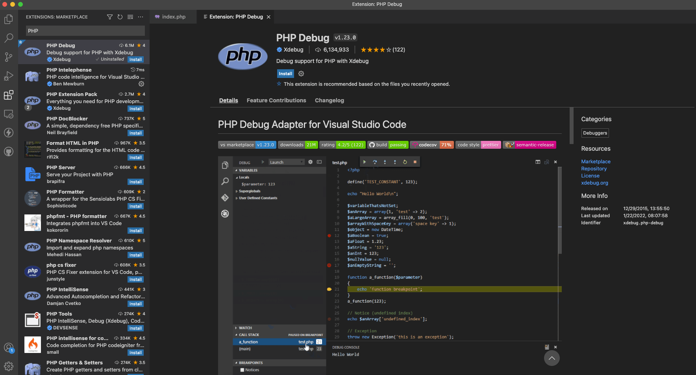
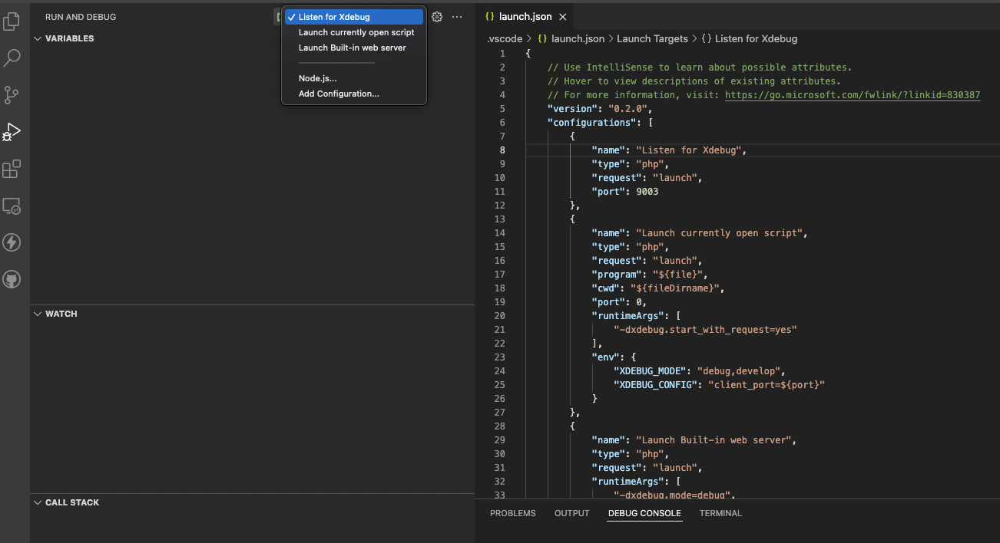
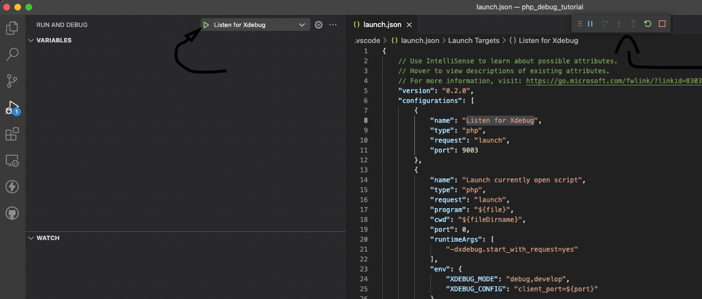
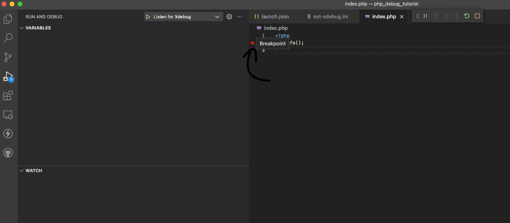
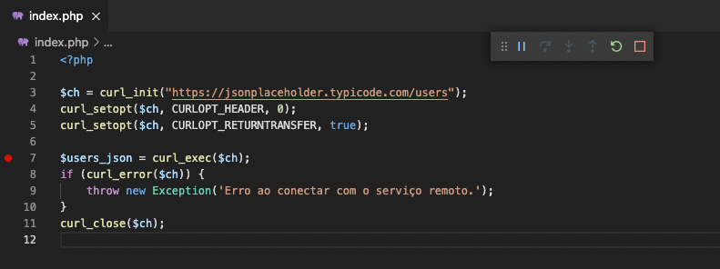
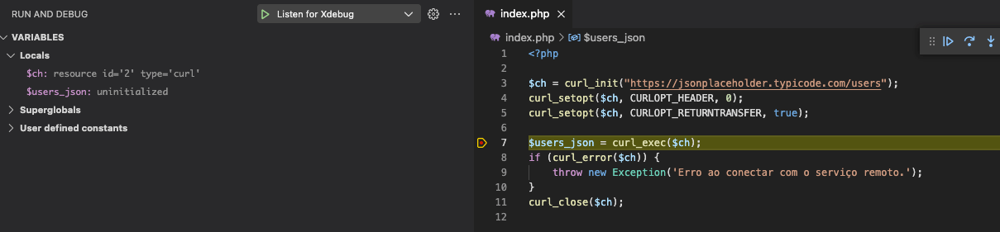
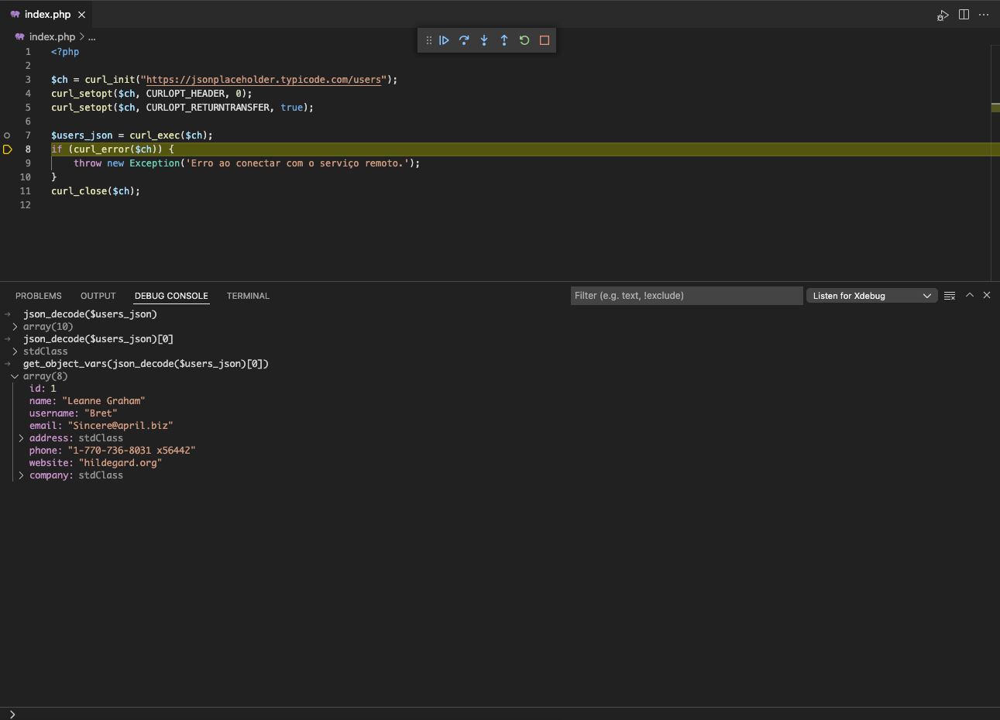
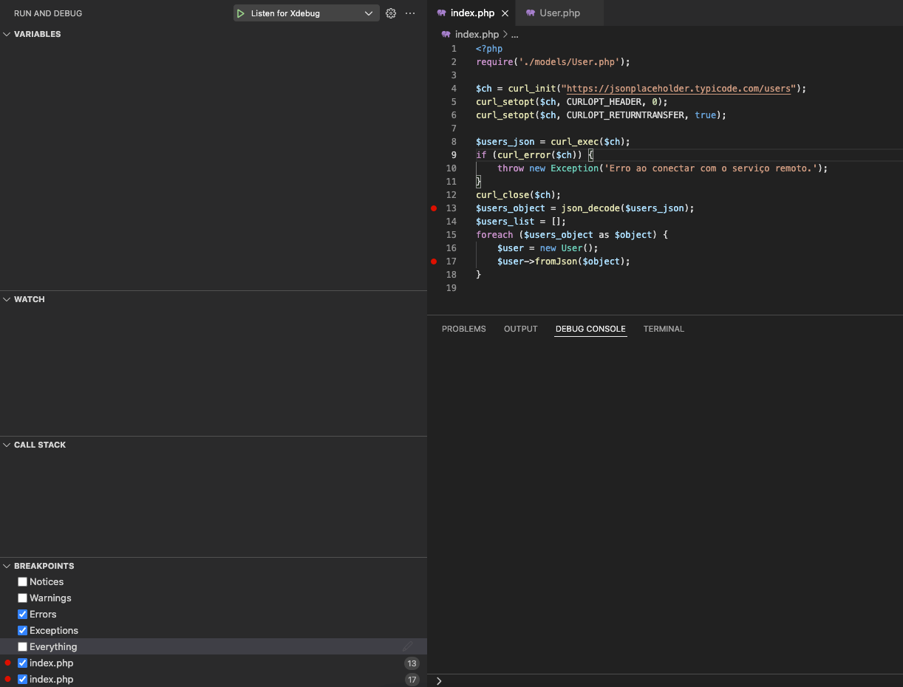
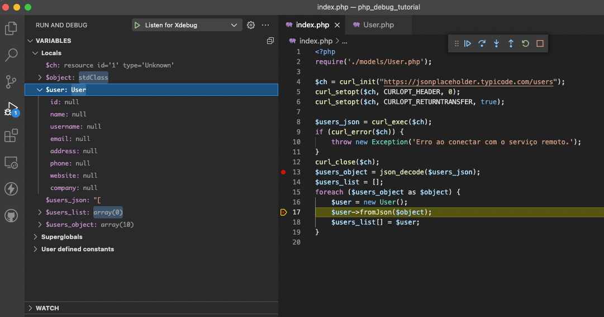
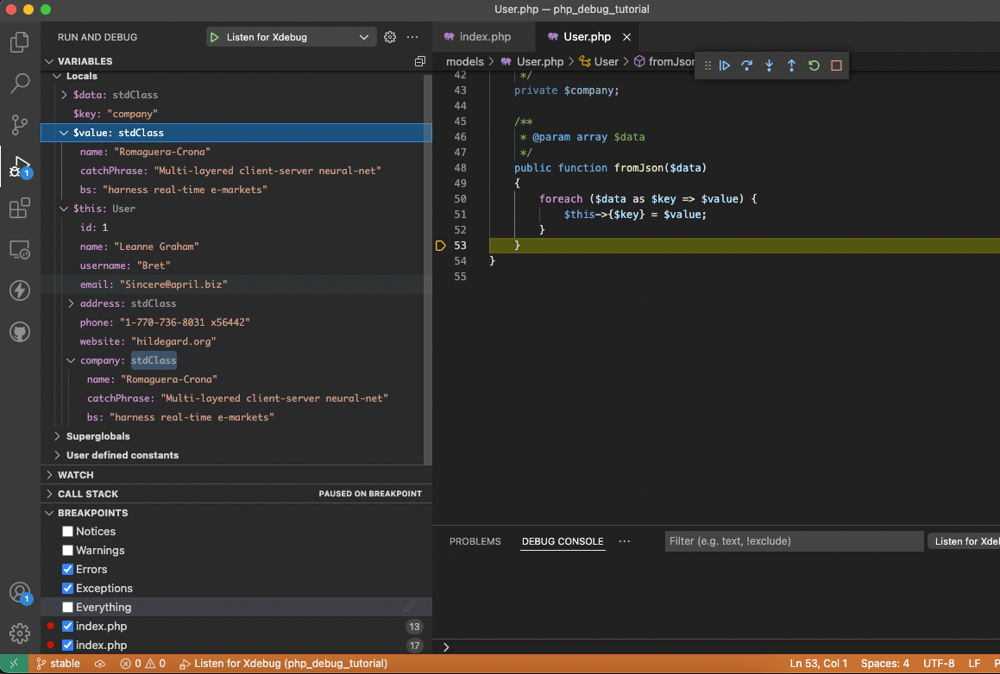

Depurando PHP com XDEBUG no VS Code
mg;nl: Neste post vamos configurar o XDEBUG e utilizar o VScode para depurar um script simples em PHP.
Muitas vezes a preguiça nos mantém presos ao var_dump e F5 como forma de depurar no PHP. Esse post serve como uma cola, misturei as informações de alguns artigos e tutoriais que encontrei pela net, e adaptei pra incluir alguns detalhes que me confundiram quando fui configurar a minha máquina. As fontes estão no final do post.
Este tutorial foi feito utilizando a versão 7.1 do PHP no macOS. Para outras versões, os passos são os mesmos mas as informações adicionadas diferem um pouco.
Você pode consultar este post para verificar qual versão do XDEBUG deve ser instalado com qual versão do PHP.
Instalação do XDEBUG e extensão VSCODE
Abaixo mostro o processo para instalação do XDEBUG em um ambiente macOS. No macOS, presumo que tanto o PHP quanto o APACHE foram instalados utilizando o brew.
Com o XDEBUG instalado na máquina, vamos configurar a extensão do XDEBUG no VScode e depurar um script simples.
Instale o XDEBUG usando o pecl
Comece instalando o xdebug utilizando o pecl.
sphp 7.1
pecl uninstall -r xdebug
pecl install xdebug-2.9.8
Depois, remova a linha zend_extension="xdebug.so", no topo do arquivo php.ini.
code /opt/homebrew/etc/php/7.1/php.ini
zend_extension="xdebug.so" ## REMOVER ESTA LINHA
[PHP]
;;;;;;;;;;;;;;;;;;;
; About php.ini ;
;;;;;;;;;;;;;;;;;;;
; PHP's initialization file, generally called php.ini, is responsible for
; configuring many of the aspects of PHP's behavior.
; PHP attempts to find and load this configuration from a number of locations.
; The following is a summary of its search order:
Após remover esta linha, adicione um novo arquivo de configuração para a biblioteca xdebug.so.
code /opt/homebrew/etc/php/7.1/conf.d/ext-xdebug.ini
[xdebug]
zend_extension="xdebug.so"
xdebug.remote_enable=1
xdebug.remote_autostart = 1 # essa linha permite o acesso ao xdebug pelo vscode, nos próximos passos
xdebug.remote_host=localhost
xdebug.remote_handler=dbgp
xdebug.remote_port=9000 # essa é a porta onde o xdebug vai rodar seu debugger
Reinicie o apache com os comandos
brew services stop httpd; brew services start httpd
Instale o script para ligar/desligar o xdebug na sua máquina.
curl -L https://gist.githubusercontent.com/rhukster/073a2c1270ccb2c6868e7aced92001cf/raw/c1629293bcf628cd6ded20c201c4ef0a2fa79144/xdebug > /opt/homebrew/bin/xdebug
chmod +x /opt/homebrew/bin/xdebug
Utilize-o com:
xdebug on
## ou
xdebug off
Você pode verificar se a instalação do xdebug aconteceu sem erros utilizando o installation wizard.
Copie o output do seu php -i e cole no site.
Na linha de comandos:
xdebug on; php -i | pbcopy
Depois, abra o site, cole o valor no campo de texto, e clique em "Analyse my phpinfo() output" ( o pbcopy salva o output do comando no seu ctrl+v ).
Um resultado parecido com este significa que deu tudo certo.
Installation Wizard
Summary
Xdebug installed: 2.9.8
Server API: Command Line Interface
Windows: no
Zend Server: no
PHP Version: 7.1.33
Zend API nr: 320160303
PHP API nr: 20160303
Debug Build: no
Thread Safe Build: no
OPcache Loaded: yes
Configuration File Path: /opt/homebrew/etc/php/7.1
Configuration File: /opt/homebrew/etc/php/7.1/php.ini
Extra Configuration Files Path: /opt/homebrew/etc/php/7.1/conf.d
Extra Configuration Files:
/opt/homebrew/etc/php/7.1/conf.d/ext-opcache.ini
/opt/homebrew/etc/php/7.1/conf.d/ext-xdebug.ini
Extensions directory: /opt/homebrew/lib/php/pecl/20160303
You're already running the latest Xdebug version
Configure o XDEBUG no VSCODE
Com o XDEBUG instalado no sistema, vamos configurar o ambiente para depuração no VSCODE.
Como exemplo, vamos criar um projeto simples em php.
Ajuste seu apache para servir os arquivos de uma pasta, onde o index.php terá apenas uma linha:
## arquivo index.php
<?php phpinfo(); ?>
Abra o projeto usando o vscode, vá nas extensões e instale o PHP XDEBUG.

Depois, selecionando seu arquivo index.php, clique em "Run and Debug" e "create a launch.json file".
Digite PHP na barra de busca e clique.
Um arquivo launch.json será criado no seu projeto, e você será redirecionado para editá-lo.
## dentro do diretório do projeto
find .
.
./index.php
./.vscode
./.vscode/launch.json
O arquivo launch.json vai ter um conteúdo no formato:
{
// Use IntelliSense to learn about possible attributes.
// Hover to view descriptions of existing attributes.
// For more information, visit: https://go.microsoft.com/fwlink/?linkid=830387
"version": "0.2.0",
"configurations": [
{
"name": "Listen for Xdebug",
"type": "php",
"request": "launch",
"port": 9000 // alterar para 9000, a mesma porta definida na configuração do XDEBUG
},
{
"name": "Launch currently open script",
"type": "php",
"request": "launch",
"program": "${file}",
"cwd": "${fileDirname}",
"port": 0,
"runtimeArgs": [
"-dxdebug.start_with_request=yes"
],
"env": {
"XDEBUG_MODE": "debug,develop",
"XDEBUG_CONFIG": "client_port=${port}"
}
},
{
"name": "Launch Built-in web server",
"type": "php",
"request": "launch",
"runtimeArgs": [
"-dxdebug.mode=debug",
"-dxdebug.start_with_request=yes",
"-S",
"localhost:0"
],
"program": "",
"cwd": "${workspaceRoot}",
"port": 9003,
"serverReadyAction": {
"pattern": "Development Server \\(http://localhost:([0-9]+)\\) started",
"uriFormat": "http://localhost:%s",
"action": "openExternally"
}
}
]
}
Ele registra alguns scripts para ativar o servidor de debug.
Repare que para cada objeto dentro de "configurations", será adicionado uma opção no menu do debugger.

Atenção: você deve alterar o valor do "port", na opção "Listen for Xdebug", para a mesma porta definida na configuração do XDEBUG. No meu exemplo, utilizei a porta 9000.
Vamos utilizar a opção "Listen for Xdebug" pois já temos um servidor php rodando com o apache.
Inicie o processo selecionando "Listen for Xdebug" no dropdown e clicando no triangulo verde.

Se o menu com as opções aparecer, o processo iniciou corretamente.
Depure um programa de teste
No nosso arquivo index.php, podemos adicionar um breakpoint clicando duas vezes na margem da linha (o vscode mostra uma bolinha vermelha).

Agora, atualizando a página no navegador, você deve ser jogado de volta para o VScode.
Caso isto não ocorra, verifique:
se criou corretamente o arquivo com as configurações do XDEBUG
se colocou a mesma porta no processo do launch.json utilizada na configuração do XDEBUG
se você reiniciou o apache utilizando
brew services stop httpd; brew services start httpd
Observe que a página não carregou normalmente no navegador. Isto é porque nosso breakpoint travou a execução do programa.
Você pode, no editor, apertar F10 para prosseguir para a próxima linha. Como nossa programa é simples, isso resolve a execução e carrega a página.
Os comandos disponíveis são os seguintes:
- Continue / Pause F5
- Step Over F10
- Step Into F11
- Step Out ⇧F11
- Restart ⇧⌘F5 (ctrl+shift+F5 no linux)
- Stop ⇧F5
Depure uma requisição HTTP
Digamos que você esteja desenvolvendo uma integração com uma API.
Vamos utilizar a API json placeholder como exemplo.
Nosso objetivo é importar uma listagem de usuários, e criar um Model para uma futura integração com banco de dados.
Vamos começar realizando uma requisição no endpoint "/users".
<?php
$ch = curl_init("https://jsonplaceholder.typicode.com/users");
curl_setopt($ch, CURLOPT_HEADER, 0);
curl_setopt($ch, CURLOPT_RETURNTRANSFER, true);
$users_json = curl_exec($ch); ## (1)
if (curl_error($ch)) {
throw new Exception('Erro ao conectar com o serviço remoto.');
}
curl_close($ch);
Podemos, antes de prosseguir com o desenvolvimento, adicionar um breakpoint em (1).

Acessando nossa página no navegador, somos jogados de volta para o VScode. Repare que a variável $users_json ainda está indefinida.

Para acessarmos seu valor, precisamos dar um "Step Over" (F10).
Podemos utilizar o debug console para trabalhar a variável em tempo real, sem necessidade de atualizar a página com cada alteração.

Na imagem acima, utilizamos o console pra descobrir a estrutura do Model "User" que precisamos implementar.
Dentro da raíz do projeto, crie um diretório "models", e dentro dele, um arquivo "User.php".
Vamos estruturar de forma simples nossa classe, e criar um método fromJson, que recebe os dados no formato de array e os passa para as propriedades do nosso objecto.
<?php
## models/User.php
class User
{
/**
* @var int
*/
private $id;
/**
* @var string
*/
private $name;
/**
* @var string
*/
private $username;
/**
* @var string
*/
private $email;
/**
* @var stdClass
*/
private $address;
/**
* @var string
*/
private $phone;
/**
* @var string
*/
private $website;
/**
* @var stdClass
*/
private $company;
/**
* @param array $data
*/
public function fromJson($data)
{
foreach ($data as $key => $value) {
$this->{$key} = $value;
}
}
}
Lembre-se de importar nosso Model no arquivo index.php.
Adicione uma iteração nos valores decodificados da requisição, e, usando o método fromJson, adicione novos objetos "User" em uma lista.
<?php
require('./models/User.php'); ## ADICIONAR
$ch = curl_init("https://jsonplaceholder.typicode.com/users");
curl_setopt($ch, CURLOPT_HEADER, 0);
curl_setopt($ch, CURLOPT_RETURNTRANSFER, true);
$users_json = curl_exec($ch);
if (curl_error($ch)) {
throw new Exception('Erro ao conectar com o serviço remoto.');
}
curl_close($ch);
$users_object = json_decode($users_json); ## ADICIONAR DAQUI PRA BAIXO
$users_list = [];
foreach ($users_object as $object) {
$user = new User();
$user->fromJson($object);
$users_list[] = $user;
}
Vamos adicionar dois breakpoints, um na decodificação do json recebido na requisição, e um no momento que chamarmos nosso método fromJson.

Na aba "breakpoints", no canto esquerdo inferior, marque também "Errors" e "Exceptions". Assim podemos depurar estes casos também pelo console do debugger.
Ative o debugger clicando no triangulo verde, volte na página do projeto e dê um F5.
Quando o processo for travado, dê um F10 ( Step Over ) e verifique que nossa variável $users_object está no formato esperado.
Depois, dê um F5 ( Continue ) para o programa rodar até o próximo breakpoint.
Confirme que a variável $user foi iniciada corretamente, com os valores nulos.

Neste breakpoint, vamos utilizar o F11 (Step Into). Isto deve nos levar para o arquivo User.php, dentro do método fromJson.
Aperte F10 ( Step Over ) algumas vezes, e verifique o valor das variáveis internas do método.

Depois, utilize o ⇧F11 (Step Out) para voltar ao arquivo index.php.
Considerações finais
Verificamos como configurar o xdebug para uso de forma interativa no VScode.
Os exemplos realizados foram simples, mas ilustram conceitos que podem facilitar a depuração de projetos complexos, onde um valor passa por diversas funções e métodos antes de ser jogado na tela através de um var_dump, por exemplo.
Usando o Step Over, Step Into e Step Out, podemos verificar todas as etapas de um processo, e testar o comportamento de uma variável, manipulando ela no console, o que diminui o trabalho de alterar o arquivo e atualizar a página, que costuma ser o método tradicional de depurar no php.
Abraço!
Fontes: